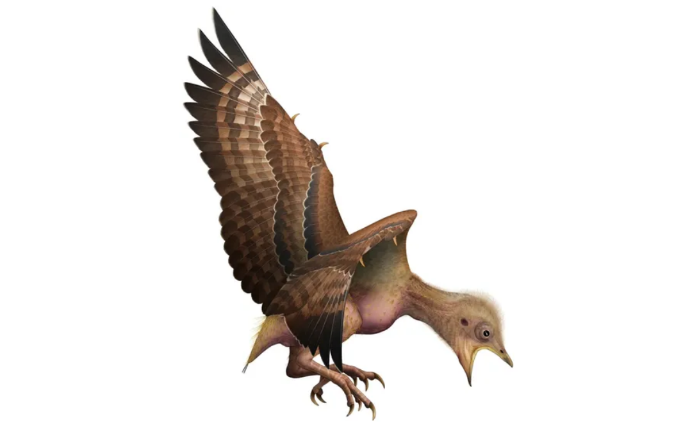
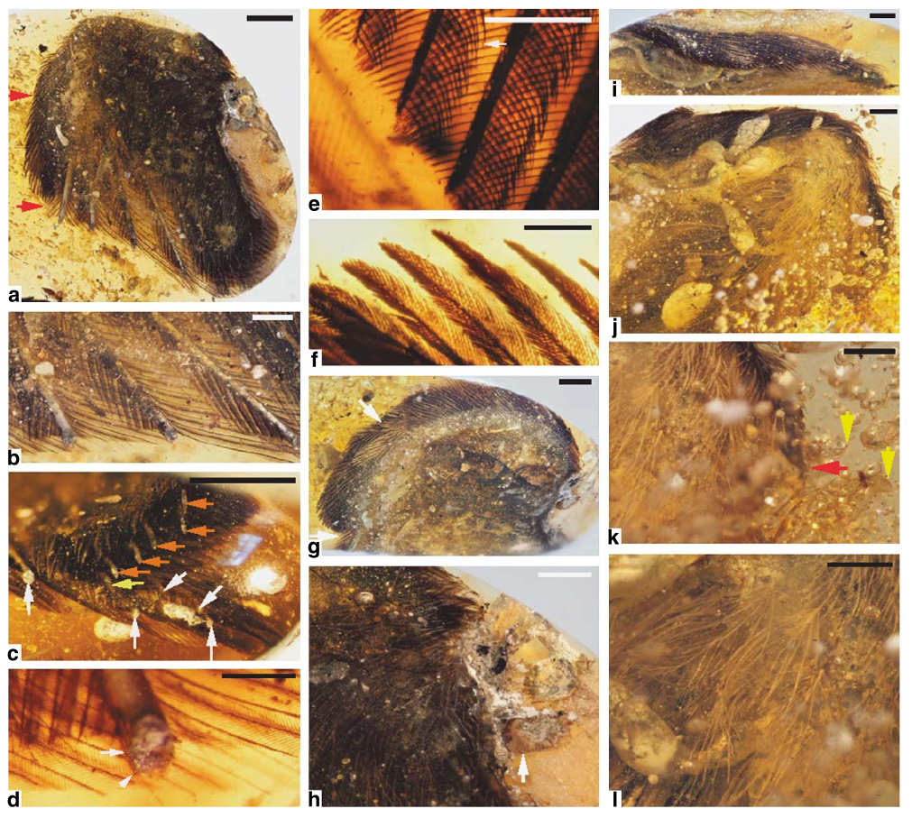
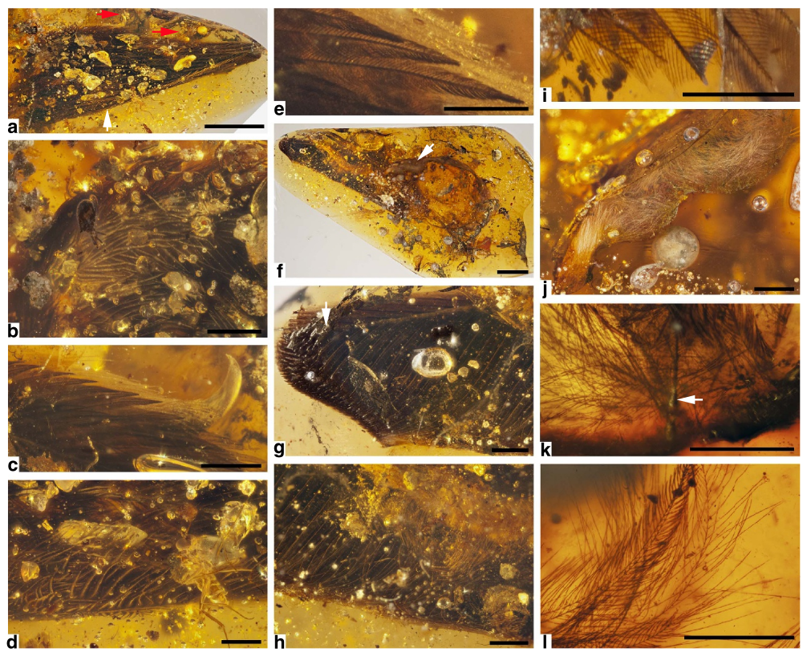
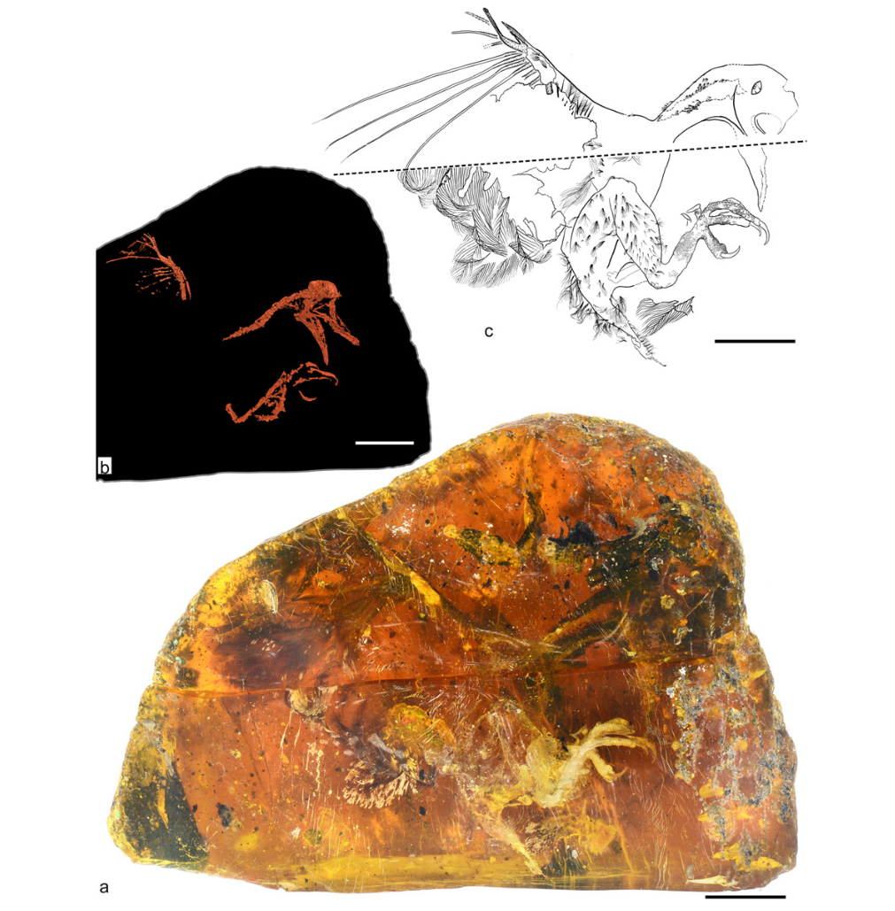

Середина мела (~99 млн лет назад)
Мьянма (штат Качин, долина Хуконг)
Бирманский янтарь
В бирманском янтаре найдены части птичьих крыльев и целый птенец энанциорниса. Визуальный анализ сохранившейся пигментации крыльев показал, что маховые перья имели коричневую окраску с более темными вершинами, дорсальные (задние) контурные перья были темно-коричневыми, тогда как вентральная (передняя) сторона и пух были бледными или белыми, а у основания алюлы (мелких перьев на первом пальце крыла) обоих крыльев присутствовало светлое пятно. У птенца HPG-15-1 обнаружены темно-пигментированные щетинковидные структуры на ногах и хвосте, напоминающие примитивные протоперья. Его маховые перья были коричневыми с бледными поперечными полосами и светлыми вершинами.
Прямой визуальный и микроскопический анализ сохраненных пигментов в проходящем и отраженном свете через прозрачную смолу.

Художественная реконструкция птенца из бирманского янтаря
Фотографии образца DIP-V-15100 из Xing et al. (2016).
Фотографии образца DIP-V-15101 из Xing et al. (2016).
Образец HPG-15-1, его реконструкция по результатам компьютерной томографии и схематическое изображение из Xing et al. (2017). Масштабная линейка 10 мм.